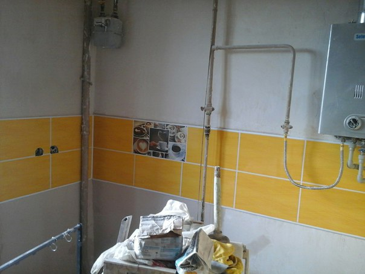

О НАС
Мы выполним следующие работы по ремонту и отделке квартир:
Ремонт квартир в Волгограде любой сложности
Ремонт квартир в старых домах и новостройках Волгограда
Евроремонт класса «VIP» под ключ

Обратившись к нам, Вы за справедливую стоимость оградите себя от всех неприятностей связанных с ремонтом квартиры
Чтобы обсудить детали и стоимость комплексной отделки, или капитального ремонта квартиры - Ремонт квартир с нами это:
-квалификация каждого нашего сотрудника, и многолетний опыт проведения капитальных ремонтов квартир под ключ в Волгограде и области
-четко организованная работа строительно-ремонтной бригады;
-использование в процессе ремонта квартир под ключ только проверенных, высококлассных материалов, а также самых современных технологических приемов и оборудования.
В сумме перечисленные факторы позволяют осуществлять отделку квартир под ключ на высшем уровне, в минимальные сроки.
Наша команда широкопрофильных профессионалов, каждый из которых обладает внушительным опытом, будь-то дизайнер-архитектор, или монтажник. Вы сможете самостоятельно убедиться в том, что мы предлагаем только высококлассные услуги. Реализованные нами проекты по отделке квартир в Волгограде являются прямым подтверждением наших заслуг, а примеры выполненных работ – непосредственным их доказательством.
Одним из основополагающих критериев выбора исполнителя работ по ремонту квартир в новостройке является запрашиваемая цена на предоставляемые услуги. Многие заказчики полагают, что даже небольшой ремонт квартиры вряд ли обойдется недорого. Между тем справедливая стоимость ремонта квартиры существует.
Цены на капитальный ремонт квартир:
От 2500 р. за м2 по площади пола.
Для уточнения стоимости требуется выезд специалиста и составление сметы – бесплатно.
Оставить заявку на отделку комнаты, или ремонт квартиры на нашей электронной почте
Перечень работ при капитальном ремонте квартир:
-Демонтажные работы
-Возведение стен из гипсокартона
-Возведение стен из газобетона
-Монтаж потолка и потолочных конструкций из гипсокартона
-Выравнивание стен и потолков
-Монтаж и возведение арок из гипсокартона
-Ремонт и выравнивание полов.
-Стяжка пола
-Сантехнические работы
-Электромонтажные работы в квартире
-Монтаж теплого пола
-Штукатурные работы. Штукатурка стен и потолков
-Шпатлевка стен и потолка
-Грунтовка стен потолков и полов
-Покраска потолка и стен
-Финишная шпатлевка стен и потолков
-Покраска стен и потолка
-Оклейка стен обоями
-Укладка ламината
-Укладка паркетной доски
-Укладка керамической плитки на стены и пол
-Утепление и отделка балкона
1. Место расположения мультимедийных устройств: телевизора, домашнего кинотеатра, музыкального центра;
2.Расположение дивана и кресел: чтобы смотреть было удобно и свет на экран не падал;
3.Где должны быть книги, одежда, посуда; в чем – пока не важно, нужно знать, в каком месте комнаты;
4.Где, что и как нужно осветить;
5.Будет ли монтироваться сплит-система (кондиционер);
О телевизоре
Телевизор подвешивают на кронштейне нечасто, но при ремонте с перепланировкой эти «дыры» могут окупиться впятеро и более. Телевизор же на кронштейне освобождает не менее квадратного метра площади и дает возможность просмотра из разных зон. Это облегчит организацию пространства (зонирование) гостиной, выбор варианта дизайна и, значит, облегчит работу и уменьшит расходы.
Если же все как один хотят камин, и площадь помещения позволяет его устроить, то телевизор очень удобно водрузить на угловой камин. Полки и почти любой декор над камином не очень-то смотрятся; над ним остается пустое пространство, которого может как раз не хватить, а вот «телик» почему-то сочетается. С точки зрения психофизиологии зрительного восприятия это обстоятельство удовлетворительного объяснения пока не нашло, но факт налицо.
Но учтите: хотя современные экраны дают обзор до 160 градусов и более, поворот головы более чем на 10 градусов при просмотре не даст толком воспринять действо, и со временем пойдут проблемы со зрением. То есть, ограничивается свобода расположения кресел с диваном, и может получиться – голову вытащил, хвост увяз.
О подсветке потолка
Подсветка потолка – мощное средство изменения настроя помещения сообразно моменту. В спальне ей трудно найти альтернативу. Но, допустим, если гостиная совмещена со спальней, переоборудованной из балкона, то интим в спальне можно создать, просто задернув на окнах просвечивающие шторы будоражащих оттенков или включив ночник. Отгородиться от прочих зон в однокомнатной квартире можно плотным занавесом или раздвижной ширмой. Подсветка же потолка стоит денег и трудов, во-первых. Во-вторых, при совместном пользовании гостиной ее перенастройка каждым из жильцов по своему настроению породит повод для конфликта. В-третьих, в помещениях, где постоянно или часто находятся дети, применять психоделические эффекты и любые средства суггестивного воздействия на психику настоятельно не рекомендуют психологи. Поэтому вопрос о подсветке следует обсудить обстоятельно и прийти к полному согласию.
Производится ремонт гостиной так же, как и любой другой ремонт комнаты, но нужно уже на этапе дизайна иметь в виду технологию. К примеру, первичная (стартовая) штукатурка изогипсом с покровной (лицевой, финишной) сатенгипсовой позволит получить идеально ровную поверхность под любую покраску, в том числе под дающую «зеркало» акриловую эмаль или особо мягкий и тонкий гризайль по толстому гипсу. Но тяжелая облицовка из декоративной каменной плитки по ней со временем начнет отваливаться с пластами штукатурки; тут нужна стартовая штукатурка на цементной основе.
Второй момент – в гостиной раздетыми не ходят, и у гостей все на виду. Вывод – в процессе ремонта имеет смысл установить экраны радиаторов отопления.
Зонирование гостиной
Разделение зала на зоны отдыха, спальную и рабочую можно произвести уже в порядке косметического ремонта и даже вовсе без ремонта. Установка стеллажа или этажерки – вообще не строительная работа, но позволит как выделить спальную зону, так и скрыть ее от посторонних глаз.
Приемы зонирования, не связанные с меблировкой, для гостиной обычной планировки те же, что и в спальне: различные по тону и фактуре поверхности, местное освещение. В квартирах с эркером или в узкой и длинной гостиной на 16 квадратных метров (гостиная-коридор) хорошо разделят ее на зоны, не уменьшая полезной площади, одна или две арки из гипсокартона.
Аркой можно превратить мрачноватую квартиру-«трамвайчик» в светлое и уютное жилье. Для этого снимают межкомнатную дверь и полностью очищают ее проем, он от этого существенно расширится. Аркой округляют верх проема, и квартира приобретает совсем иной облик; сделать же самостоятельно арку из гипсокартона не столь уж сложно.
Гостиная с двумя окнами
Зал с двумя окнами можно скомпоновать двояко. В гостиных не очень светлых или с окнами на одной стене, или на смежных стенах у дальнего от входа окна самое место для спальной зоны: свет имеет большое значение для гигиены спальни. Если же окна на противоположных стенах (двухсветный зал), и особенно, если одно из них южное или юго-западное, имеет смысл оставить лишь его верхнюю часть, см. справа на иллюстрации гостиных со стеллажами.
Ремонт и дизайн гостиной комнаты
Во-первых, сразу же появляется место для рабочей зоны с самым благоприятным освещением. Во-вторых, летом будет не так жарко. Зимой в ясную погоду достаточную естественную освещенность даст отражение от снежного покрова, а в ненастье зимой без искусственного освещения все равно не обойтись.
Если же зал с балконом планируется превратить в гостиную-спальню, то спальную зону на балконе можно выделить за счет разности уровней пола. Сложнее (больше работы на балконе), но эффективнее невысокий, 5-10 см, подиум. Низкий пол в спальне-балконе наоборот, подчеркнет кровать: человек лучше видит сверху вниз, чем снизу вверх, это досталось нам от живших на деревьях предков.
О способах отделки
Потолок в гостиной можно отделывать такими способами:
1. Покраска – традиционный, дешевый и далеко не самый плохой способ. Любые методы организации пространства сами «отъедают» свет в комнате, а равномерно-белый потолок хорошо «ловит» и переотражает всюду малейшие отблески из окон. Покраска акриловой эмалью по цельному гипсокартону усиливает эффект и, кроме того, не пылит и не шелушится.
2. Обои – для потолка подходят жидкие декоративные. Светлый веселенький потолок сразу расширит видимое пространство комнаты.
3. Пенопластовая плитка – недолговечна, но дешева и легко заменяема. Не под прямыми солнечными лучами ее может хватить лет на 5-7. Годится, как отлично переотражаюший свет материал, для потолочной облицовки над рабочей зоной.
4. Фальшпотолок – достаточно дорог и сложен в работе, но может быть оборудован светодиодной подсветкой и активно участвовать в зонировании пространства и дизайнерских приемах.
Фальшпотолки, в свою очередь, бывают таких видов:
Накладные – обшивка по обрешетке фактически без межпотолочного пространства. Почти не отнимают высоты помещения, но из коммуникаций под обшивкой можно проложить только электричество.
Натяжные – полотнище из ткани или пленки. Замечательны в декоративно-эстетическом отношении, но во всем остальном плохи: служат недолго, коммуникаций не держат никаких, от нагрева светильниками выгорают и пятнятся.
Подвесные – собираются или монтируются на каркасе, подвешенном на довольно значительном расстоянии от базового потолка. Довольно дороги и сложны в работе, но при достаточной высоте помещения позволяют решить все задачи потолка, функциональные и декоративные, и, кроме того, дают место для прокладки любых коммуникаций.
Подвесные потолки
Подвесные потолки по характеру выполнения также делятся на несколько видов:
Кассетный – это потолки типа армстронг. В ячейки легкого простого каркаса укладываются декоративные волокнистые плиты, растровые светильники, решетки вентиляции. Всем хороши, но превращают квартиру в офис.
Каркасный – обшивка крепится снизу к прочному металлическому каркасу из периметральных профилей, несущих U-профилей и связующих C-профилей. Могут быть цельными и модульными – в виде фриза, карниза, плафона, не занимающих всей площади базового потолка.
Ступенчатый (многоуровневый) – сложный каркасный потолок. Каркас усиленный, «многоэтажный». Может быть модульным, оставляя свободными участки базового потолка, сочетаться с натяжными или кассетными вставками. Вершина потолочного мастерства и широкий простор для дизайнера, но сложен и дорог.
Подвесные потолки обшиваются, как правило, гипсокартоном, позволяющим формировать из него криволинейные поверхности. Реже на обшивку потолка идет ламинат, пластиковая вагонка, пиломатериалы, фанера. Обшивка потолка плотными плитными материалами встречается как исключение: надежно закрепить тяжелую плитку на весу трудно и требует высокого мастерства.
Стены, как известно, штукатурят, красят, оклеивают обоями или обшивают ламинатом, пластиковыми панелями или плитами, деревом, гипсокартоном по обрешетке деревянной или из потолочных металлопрофилей, но лежащих прямо на стене. Иногда – частично или полностью облицовывают керамической плиткой или декоративным камнем.
Оптимальный вариант для гостиной – на треть или полвысоты внизу обшивка или облицовка, а до верха – обои.
Это позволит сэкономить дорогие материалы, правильно распределить свет светлыми обоями и защитит стены внизу. Но обшивка на обрешетке во всю высоту конструктива даст эффективную звуко- и теплоизоляцию. В блочных хрущевках это особенно важно, и штукатурка с обоями на стенах из старого железобетона держатся плохо, так что здесь лучше цельная обшивка.
Пол
Дощатый пол по лагам отживает свое. Современные строительные технологии позволяют сформировать стяжку настолько ровную, что по ней можно настилать чистовой пол по фанерной подушке, а то и прямо на базовую поверхность.
Декоративные настилы пола в гостиных чаще всего следующие:
Паркет – традиционный и ничуть не сдающий свои позиции материал. Современные паркетные мастики и монтажные клеи позволяют настилать его как прямо на стяжку, так и на фанерную подушку.
Ламинат – самый популярный материал для пола. Имея вполне «дощатый» вид, прочен, стоек к износу, несложен в работе при самостоятельном исполнении.
Линолеум – вовсе не бюджетный эрзац паркета и дерева. Современные виды линолеума обладают исключительными достоинствами (см. чуть ниже) при сравнительно невысокой стоимости.
Керамическая плитка – керамогранитная отлично подходит для обеденной зоны. Не холодна на вид и на ощупь, не скользкая, прочная, очень легко моется, химически стойкая, выпускается в широчайшем ассортименте тонов и текстур. Но для ее сочетания в прочими видами покрытий пола необходима сложная, трудоемкая и затратная ступенчатая стяжка.
Пробковый пол рекомендуется для детской: он гигиеничен, экологичен, теплый упругий. Подойдет и в гостиную, если вписывается в дизайн. Может быть выполнен плавающим на базовой поверхности, т.е. несложным для самостоятельной работы.
Декоративный наливной пол – теплый, упругий, стойкий, может быть налит по старой шершавой и бугристой стяжке, выпускаются и с 3D рисунком, но очень дорог.
Регулируемый пол – позволяет выровнять базовую поверхность с точностью до долей миллиметра, но дорог и отбирает много высоты помещения. Монтируется, как правило, в элитном жилье под декоративный настил из деревянной инкрустации и т.п.
Оригинальные виды отделки
И в заключение раздела об отделке упомянем о некоторых современных замечательных материалах.
Пробковые обои – слой прессованной пробковой крошки на бумажной или матерчатой основе. Слабо восприимчивы к загрязнениям, легко моются, дают «дышашие» стены. Плохо отражают свет, поэтому для детской или спальни не рекомендуемы, но для зоны отдыха в светлой гостиной вполне подойдут. Выпускаются тонированными, в виде листов с готовыми декоративными панно поклейка возможна с заворотом за угол.
Пробковые обои разбухают от пролива на них жидкости, но испарения не впитывают и запахи в себе не держат, так что пригодны и для совмещенной с гостиной кухни.
Жидкие обои – гипсовая штукатурка особого состава с добавкой органических хлопьев и волокон. Готовятся непосредственно перед нанесением по инструкции. Достоинство – индивидуальность при несложной стандартной технологии: получающиеся рисунки неповторимы.
Декоративная штукатурка
Венецианская декоративная штукатурка – в гипсовую штукатурку добавляется минеральная крошка или каменная мука разных оттенков. Веками по венецианской штукатурке работали искуснейшие живописцы, но теперь она уверенно выходит на массовый строительный рынок: производители предлагают готовые сухие смеси, позволяющие имитировать мрамор, жатую ткань, морозные узоры, змеиную кожу и т.п. Попрактиковавшись, венецианскую штукатурку можно готовить самому и, не имея никакого художественного образования, рисовать ею на стенах косые струи дождя, ветви деревьев или простые узоры, разноцветные полосы.
Также существует другой похожий метод декорирования стен — фактурная штукатурка. Читайте о нем подробнее по ссылке.
Мармолеум – современная разновидность линолеума. Экологичен, изготавливается из натуральных материалов. Прочен, не боится даже брошенной сигареты, стойкость – многолетняя. Не требует подготовки базовой поверхности под настил; возможен плавающий настил. Дает тепло- и звукоизоляцию, обладает бактерицидными свойствами. Не боится бытовых загрязнений и песчинок с обуви, как ламинат и паркет. Держится десятилетиями в общественных зданиях. Выпускается рулонами и плитами, выбор фактур и оттенков непрерывно расширяется. Единственный недостаток – предубеждение потребителей против линолеума.
Бамбуковый паркет – по достоинствам сравним с мармолеумом. К сожалению, готовое покрытие имеет несколько волнистую поверхность, чувствующуюся даже сквозь тапочки на войлочной подошве.
Итак, теперь вы, возможно, имеете представление, что нужно для ремонта зала своими руками и к чему нужно стремиться. Успеха!
Ремонт кухни — дело весьма хлопотное и затратное. Однако в нем можно найти немалые резервы для экономии. Эти советы по ремонту кухни помогут вам сберечь приличную сумму без ущерба для качества ремонта и при этом воплотить в интерьере кухни все свои задумки.
Начиная ремонт кухни, четко расставляем приоритеты
Какие очевидные недостатки есть у вашей кухни? Что вы хотите устранить в первую очередь? Какие ремонтные работы на кухне жизненно необходимы, а какие можно отложить на потом — на случай, если останутся свободные средства? Какие виды работ обязательно идут «в связке», а какие можно растянуть во времени, доделав их позже? Исходя из этих соображений, будем составлять поэтапный план ремонта кухни.
Профессионалы советуют составлять два варианта бюджета на ремонт кухни — экономный (на случай, если придется сильно ограничивать себя в деньгах) и оптимистичный (если вы сможете выделить дополнительные средства на ремонт кухни). Как показывает опыт, истинная стоимость вашего ремонта окажется где-то посередине. Очень важно предусмотреть резервную сумму на непредвиденные расходы. Они обязательно будут.
Детальный план ремонта кухни
Планируя ремонт кухни, «думать» лучше на бумаге. Важно записать абсолютно все, даже самые очевидные и мелкие виды работ. В этом случае вы не только ничего не забудете, но и стресс от ремонта будет намного меньше.
Очень тщательно продумайте последовательность ремонтных работ на кухне: что можно совместить и выполнять параллельно, чтобы максимально сэкономить деньги и время? Что вы можете сделать самостоятельно, а для чего в любом случае придется приглашать мастера? Хороший вариант — выполнить своими силами все демонтажные работы: снять старые обои на кухне, сбить настенную и напольную плитку, убрать плинтусы, очистить окна и двери от краски. Уже это обеспечит вам приличную экономию.
Ведем учет расходов на ремонт кухни
Рассчитав примерное количество необходимых отделочных материалов для ремонта кухни, заведите отдельный блокнот. С ним вы будете ходить по строительным магазинам и рынкам и путешествовать по ремонтным интернет-магазинам в Сети. Записывайте, сколько в каждом магазине стоят нужные вам материалы, и какие есть альтернативные варианты. Возможно, посоветовавшись с продавцами или онлайн-консультантами, вы подберете лучший вариант, чем тот, который планировался изначально. Главное — не стесняйтесь задавать много вопросов. Такая настойчивость обязательно окупится.
Думаем на будущее
Выбирая материалы для ремонта кухни, стоит задуматься о том, что окажется более выгодным в долгосрочной перспективе. Лучше переплатить сейчас, сделав ставку на качество отделочных материалов и новых экономичных технологиях, зато они будут служить долго.
К примеру, энергосберегающие лампочки служат дольше и позволяют сберегать электроэнергию, но стоят существенно дороже обычных лампочек накаливания. Иногда использование более качественных отделочных материалов, позволяет добиться отличного эффекта с меньшими усилиями. Можно сэкономить на выравнивании стен, если оклеить их фактурными обоями. Они прекрасно визуально скрывают мелкие неровности.
Сокращаем затраты на ремонт кухни
Материалы для ремонта лучше покупать в одном магазине. В этом случае, вы вполне обоснованно можете претендовать на скидку. Кстати, если ремонт и отделку кухни для вас будет делать серьезная фирма, они могут предложить вам дисконтную программу на покупку отделочных материалов. Нередко такие компании договариваются с крупными поставщиками самых разных товаров для ремонта, которые предоставляют их клиентам скидки.
Ремонт кухни — дело весьма хлопотное и затратное. Однако в нем можно найти немалые резервы для экономии. Эти советы по ремонту кухни помогут вам сберечь приличную сумму без ущерба для качества ремонта и при этом воплотить в интерьере кухни все свои задумки.
Начиная ремонт кухни, четко расставляем приоритеты
Какие очевидные недостатки есть у вашей кухни? Что вы хотите устранить в первую очередь? Какие ремонтные работы на кухне жизненно необходимы, а какие можно отложить на потом — на случай, если останутся свободные средства? Какие виды работ обязательно идут «в связке», а какие можно растянуть во времени, доделав их позже? Исходя из этих соображений, будем составлять поэтапный план ремонта кухни.
Профессионалы советуют составлять два варианта бюджета на ремонт кухни — экономный (на случай, если придется сильно ограничивать себя в деньгах) и оптимистичный (если вы сможете выделить дополнительные средства на ремонт кухни). Как показывает опыт, истинная стоимость вашего ремонта окажется где-то посередине. Очень важно предусмотреть резервную сумму на непредвиденные расходы. Они обязательно будут.

Прежде чем начинать ремонт в ванной, нужно определиться какой вид ремонта Вы собираетесь делать – косметический или капитальный, поскольку эти ремонты имеют большое отличие в затратах как времени, так и средств. Если состояние труб, ванны и сантехнического оборудования вполне удовлетворительное, а хочется обновить интерьер и поменять отделку ванной комнаты, то в этом случае можно обойтись косметическим ремонтом. Необходимо только определиться с направлением стиля, для того чтобы подобрать соответствующие отделочные материалы для пола, стен и потолка. Однако устраивает ли Вас ванная комната своими размерами и формой? А может быть стоит снести перегородку и получить намного больше пространства. В более просторном помещении значительно легче не только разместить всю необходимую мебель и оборудование, но и создать интересный и красивый интерьер, чтобы посещение ванной комнаты было всегда удовольствием. Тем более, сегодня дизайнеры предлагают такой большой выбор в оформлении ванной, что можно без труда выбрать стиль, который больше всего Вам подходит. Это может быть классика, кантри, хай-тек или любой другой. Возможно Вы захотите сами разработать дизайн своей ванной комнаты, что ж ванная – это такое помещение, в котором можно и поэкспериментировать. Главное, чтобы созданный интерьер был комфортным и удобным для Вас. Кроме того, возможная перепланировка санузла может стать поводом для капитального ремонта или евроремонта. Следующим этапом в ремонте ванной комнаты должна быть разводка и укладка труб. Это тоже достаточно ответственный и важный момент, поскольку надежные и правильно подведенные трубы – залог качественного ремонта, который продолжительное время позволит Вам спокойно жить. Чтобы проложить трубы, в стене с помощью штробореза пробивается штроба, в которую они и закладываются. Для того чтоб из-за образования конденсата стены не начали сыреть, их покрывают теплоизолирующим материалом.
Сегодня рынок предлагает потребителям следующие виды сантехнических труб: полипропиленовые, металлические, металлопластиковые, полиэтиленовые.
Перед началом отделки стен необходимо правильно и качественно сделать электрическую проводку. В ванной комнате, как правило, находится немало электрических приборов – стиральная машина, душевая кабина, водонагреватель, гидромассажные ванны, осветительные приборы, электронные смесители. Большая часть этой аппаратуры должна быть обязательно заземлена, а кабели и светильники выполнены во влагозащищенном исполнении. В случае, когда в ванной устанавливаются выключатели и розетки, хотя это делать не рекомендуется, необходимо использовать специальные модели, имеющие защиту от влаги, высокой температуры и вредных испарений.
После того как все необходимые разводки будут сделаны, можно браться за отделку стен и потолка. Сначала поверхность нужно подготовить, очистив от старой краски, потом заштукатурить и выровнять и только после этого начинать отделку наиболее подходящим для Вашей ванной комнаты материалом. Лидером среди отделочных материалов ванной по-прежнему является керамическая плитка. Однако рынок предлагает нам очень большой выбор качественных и интересных материалов, которые помогут и надежно защитить стены, и создать задуманный интерьер. Кроме плитки, сегодня производители предлагают камень (натуральный и искусственный), стеклоблоки, влагостойкие стеновые панели, моющиеся обои, натуральное дерево и другие. Все эти материалы имеют необходимые свойства – надежность, влагонепроницаемость, долговечность и хорошо подходят для оборудования ванной. Окончательный выбор материала для отделки стен зависит от стиля, в котором Вы хотите оформить ванную комнату. Конечно, каждый из материалов, которые перечислены выше, имеет свою специфику при нанесении его на стены, кроме того, понадобятся специальные инструменты, клей и другие вспомогательные материалы. Поэтому, как и любая сложная работа, кроме оклеивания обоями и покраски, отделка стен требует навыков и профессионализма. Вряд ли кому-то приятно будет видеть после окончания капитального ремонта кривую стену. Потолок в ванной должен быть обязательно влагостойким. Сегодня чаще всего потолки делают подвесными. Такой потолок не только выглядит красиво и стильно, но в него также можно спрятать электропроводку и элементы вентиляции. Кроме того подвесной потолок не требует идеального выравнивания поверхности. Для выполнения данных потолков используются стальные модули, минеральные волокна, алюминиевые рейки. Все эти материалы хорошо переносят влагу, не ржавеют, не портятся, прочные и надежные. Особенно удобны алюминиевые рейки, которые монтируются достаточно просто. Они не промокают и за ними легко ухаживать. В последнее время в моду вошли многоуровневые потолки с подсветкой, которые делаются из влагостойкого гипсокартона. С помощью таких потолков можно создать необычайно красивый дизайн, используя разные варианты подсветки. Если же необходимо зрительно поднять потолок и увеличить пространство, то следует сделать зеркальный потолок. Эффект будет потрясающим, а ванная комната – стильной и изысканной.
Разводка труб, отделка стен и потолка, а также все остальные работы являются очень важными, однако главный элемент ванной комнаты – это, конечно же, ванна. И благодаря большому разнообразию, которое предлагают производители, она может иметь не только разную форму, но, и изготавливаться из разных материалов. Исходя из размеров ванной, а также ее планировки, сегодня можно выбрать привычную для нас прямоугольную ванну, овальную, круглую, квадратную, волнообразную, а небольшому помещению подойдет угловая ванна треугольной формы. К хорошо всем знакомым чугунным эмалированным ваннам присоединились акриловые, стальные эмалированные, мраморные и даже деревянные. Все они популярны среди потребителей, поскольку имеют высокую теплоемкость, а также прочные и надежные в процессе эксплуатации. В последнее время ванны стали более красивыми и безопасными. Современная ванна отличается утонченной формой, эмалью высокого качества и покрытием, препятствующим возможному скольжению. Кроме того, ванна имеет удобные ручки. Конечно, у нас по-прежнему самыми распространенными остаются чугунные ванны, и они этого вполне заслуживают благодаря своим отличным качествам. Однако более современными по своему оснащению являются акриловые ванны. Они могут быть оборудованы разными устройствами – гидромассажной системой (джакузи), электронным управлением, декоративной подсветкой, а также иметь подлокотники или сиденье. Акриловую ванну легко мыть, а поскольку ее состав препятствует размножению бактерий, она является самой гигиеничной. Также акриловая ванна достаточно удобна при подключении арматуры, разных технических приспособлений и смесителей. Устанавливая чугунную или металлическую ванны, не забывайте, что их нужно обязательно заземлить.
Несмотря на то, что ванна – это замечательное место для полного расслабления и отдыха, в последнее время многие наши сограждане предпочитают иметь современную душевую кабину. И хотя душевые кабины недавно появились на нашем рынке, они пришлись по душе. Кабина не только занимает немного места, но она красивая, гигиеничная, удобная и к тому же экономичная. Поскольку душевые кабины имеют разные исполнения (гидросауна, обычное, гидродуш), а также самые различные формы (прямоугольную, круглую, угловую и так далее), то подобрать ее в соответствии с общим дизайном ванной не представляет никакой сложности. А самый лучший вариант – это когда при наличии места в ванной комнате присутствуют и душевая кабина, и ванна.
Во время ремонта ванной комнаты следует уделить время и внимание умывальникам и смесителям, ведь ими мы пользуемся намного чаще, чем расслабляемся в ванне. И здесь разработчики и производители радуют нас не только функциональностью современных смесителей, но и разнообразием дизайна. Последние поколения смесителей можно смело причислить к деталям, украшающим интерьер ванной, а, кроме того, они настолько комфортны, что достаточно просто поднести руки к крану, и из него польется вода. Наиболее распространенными сегодня видами смесителей являются однорычажные и двухвентильные. Однорычажные смесители удобны в применении – их легко включать и выключать, при этом и мощность водяной струи, и температура воды регулируется автоматически. Традиционные двухвентильные смесители имеют два вентиля, с помощью которых регулируется температура воды. Поскольку поломка смесителя случается достаточно часто, то следует учесть, что ремонтировать проще двухвентильные смесители. Материалом, из которого чаще всего изготовляют смесители, являются латунь, нержавеющая сталь, хром, а для их украшения используются разные декоративные покрытия.
Современные умывальники тоже отличаются разнообразием форм, материала и дизайна. Некоторые мраморные умывальники выглядят как настоящие произведения искусства. Наиболее распространенным материалом для изготовления умывальников является сантехническая керамика и фарфор, стекло, мраморная крошка. По способу установки умывальники бывают на пьедесталах и подставках, на кронштейнах, на полках. На кронштейнах крепится всем нам привычная и хорошо знакомая раковина. Умывальник, который находится на пьедестале (тюльпан), позволяет скрыть водопроводные трубы и сифон. Если же для крепежа раковины использовать подвесную полку, то, сделав ее, например, двухэтажной, можно не только закрыть всю систему слива, но и получить место для хранения необходимых вещей. Кроме того, раковины выпускаются как с отверстием для установки смесителя, так и без. Последний вариант используется в случае, когда для ванны и раковины предусматривается один общий смеситель.
Если Вы хотите, чтобы в ванной комнате было тепло, уютно и сухо нужно во время ремонта помнить о таких вещах как полотенцесушитель и вентиляционная система. Именно от них в немалой степени зависит комфортность помещения. Изготавливаются полотенцесушители, как правило, из нержавеющей стали. Форма у них может быть подковой, змеевидная, пружиной и лесенкой, а по принципу работы различают электрические, водяные и комбинированные полотенцесушители. Для того чтобы на стенах ванной комнаты не образовывался конденсат, и они оставались сухими, ее оборудуют вентиляционной решеткой. При совмещении ванной с туалетом желательно использовать принудительную вентиляцию. Кроме того, под дверью оставляют зазор до двух сантиметров.
Начиная ремонт ванной комнаты нужно помнить, что делаем мы его достаточно редко, поскольку это очень сложная и трудоемкая работа, требующая не только денег и времени, но и специальных знаний, навыков и инструментов. Поэтому необходимо тщательно продумать и проработать все этапы ремонта, начиная от дизайна ванной комнаты, материалов, оборудования до покупки любых, даже самых незначительных предметов. Качественно выполненный ремонт, который полностью преобразит ванную комнату, доставит Вам много удовольствия и радости.